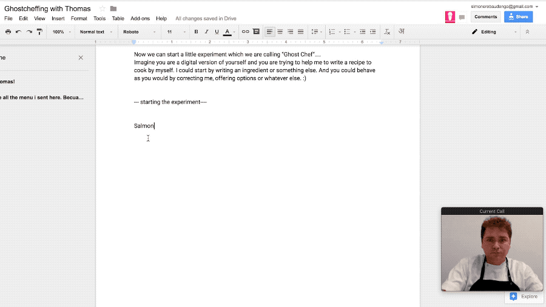

2019
GhostChef
A generative conversational tool for kitchen creativity.
GhostChef lets you collaborate with a digital version of a chef — one that exists not as a voice assistant, but as a curated culinary intelligence with a distinct point of view.
Each 'ghost chef' is trained on a single chef's identity: their ingredients, combinations, and preferences. Users explore recipe combinations through conversation, guided by a character rather than a search engine. The result is generative cooking: unexpected combinations that feel authored, not algorithmic.
GhostChef emerged from a six-month residency at Bits x Bites, a food and technology accelerator in Shanghai, developed with Lorenzo Romagnoli as part of YEAST.
